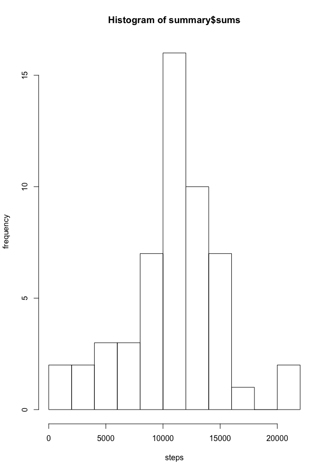
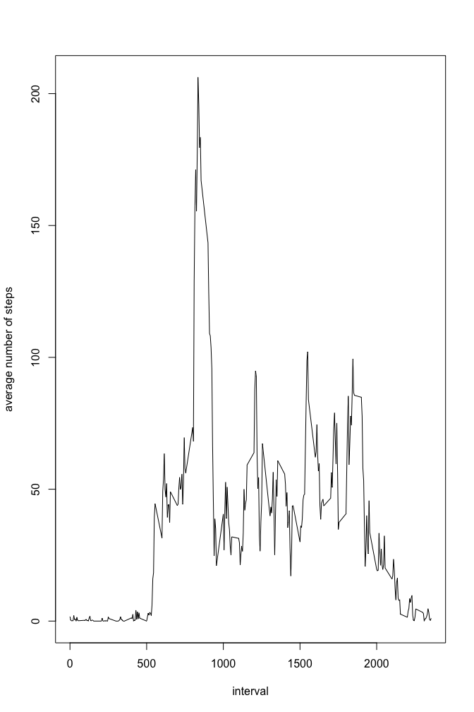
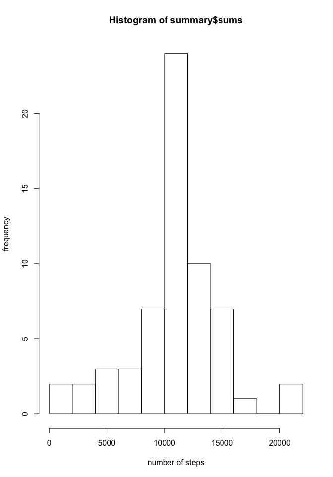
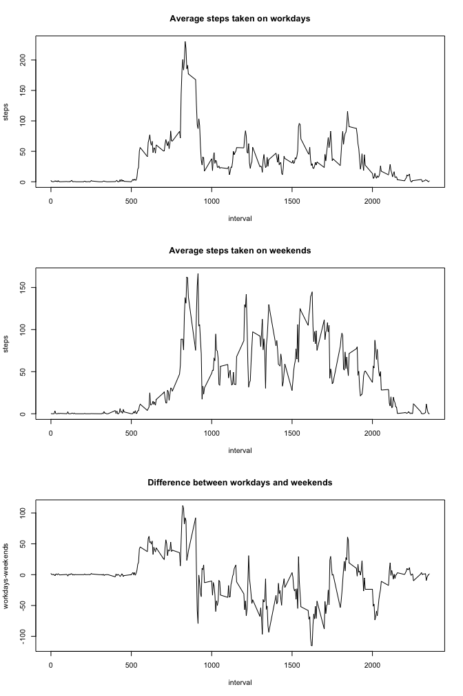

library(dplyr)##
## Attaching package: 'dplyr'## The following objects are masked from 'package:stats':
##
## filter, lag## The following objects are masked from 'package:base':
##
## intersect, setdiff, setequal, unionWe directly read in the zip file be use of unzip
data <- read.csv(unzip("./activity.zip"))Next we have a look at the data and how it is formatted
head(data)## steps date interval
## 1 NA 2012-10-01 0
## 2 NA 2012-10-01 5
## 3 NA 2012-10-01 10
## 4 NA 2012-10-01 15
## 5 NA 2012-10-01 20
## 6 NA 2012-10-01 25tail(data)## steps date interval
## 17563 NA 2012-11-30 2330
## 17564 NA 2012-11-30 2335
## 17565 NA 2012-11-30 2340
## 17566 NA 2012-11-30 2345
## 17567 NA 2012-11-30 2350
## 17568 NA 2012-11-30 2355Obviously, missing values in the steps variable are encoded as NA. I personally prefer NaN for missing values so lets change this first:
data$steps[is.na(data$steps)] <- NaNWe use the dplyr package to analyse our data per day. First, we group the date by the date variable and afterwards we write a summary and look at the first values:
dated <- group_by(data,date)
summary <- summarize(dated,means=(mean(steps,na.rm=TRUE)),medians=median(steps,na.rm=TRUE),sums=sum(steps))
head(summary)## Source: local data frame [6 x 4]
##
## date means medians sums
## (fctr) (dbl) (dbl) (dbl)
## 1 2012-10-01 NA NA NaN
## 2 2012-10-02 0.43750 0 126
## 3 2012-10-03 39.41667 0 11352
## 4 2012-10-04 42.06944 0 12116
## 5 2012-10-05 46.15972 0 13294
## 6 2012-10-06 53.54167 0 15420Lets see how active the subject is by plotting a simple histogramm of the total number of steps taken per day, as stored in summary$sums
hist(summary$sums,breaks=10,xlab = "steps",ylab="frequency")
And now we calculate the mean and median of the total number of steps taken per day. Note, that we ignore NaN for the calculation. Otherwise, both, mean and median would be NaN!
mean_totals <- mean(summary$sums,na.rm=TRUE)
mean_totals## [1] 10766.19median_totals <- median(summary$sums,na.rm=TRUE)
median_totals## [1] 10765As can be seen, mean and median are pretty close to each other. The interval with the maximum number of steps is
Next we would like to see how active the subject is in different phases of a day. So we again group our data, this time by the variable interval and we summarize the average number of steps and plot the result
intervaled <- group_by(data, interval)
summary2 <- summarize(intervaled,meanPerInterval=(mean(steps,na.rm=TRUE)),medianPerInterval=(median(steps,na.rm=TRUE)))
plot(summary2$interval,summary2$meanPerInterval,type="l",xlab = "interval",ylab="average number of steps")
The interval can be determined with the following code:
summary2$interval[summary2$meanPerInterval==max(summary2$meanPerInterval)]## [1] 835How many missing values do we have?
sum(is.na(data$steps))## [1] 2304As we have seen, there are a lot of missing values in our data set. In total we have 2304 of them. Since missing values may bias our analysis we may replace them with some resonable value. We choose the following approach: - find a missing value - replace it with the mean value of its 5-minute interval
na_logi <- is.na(data$steps)
rep_summary2 <- rep_len(summary2$meanPerInterval,length.out = length(data$steps))
data <- mutate(data,steps_na_rm=steps)
data$steps_na_rm[na_logi] <- rep_summary2[na_logi]
sum(is.na(data$steps_na_rm))## [1] 0dated <- group_by(data,date)
summary <- summarize(dated,means=(mean(steps_na_rm)),medians=median(steps_na_rm),
sums=sum(steps_na_rm))
head(summary)## Source: local data frame [6 x 4]
##
## date means medians sums
## (fctr) (dbl) (dbl) (dbl)
## 1 2012-10-01 37.38260 34.11321 10766.19
## 2 2012-10-02 0.43750 0.00000 126.00
## 3 2012-10-03 39.41667 0.00000 11352.00
## 4 2012-10-04 42.06944 0.00000 12116.00
## 5 2012-10-05 46.15972 0.00000 13294.00
## 6 2012-10-06 53.54167 0.00000 15420.00hist(summary$sums,breaks=10,xlab = "number of steps",ylab="frequency")
mean_totals_na_rm <- mean(summary$sums)
mean_totals_na_rm## [1] 10766.19median_totals_na_rm <- median(summary$sums)
median_totals_na_rm## [1] 10766.19To analyze the activity patterns and find differences between workdays and weekends we first of to add a new variable to our data set which stores the weekday abbreviation:
data <- mutate(data,wkd=weekdays(as.POSIXct(data$date),abbreviate = TRUE))Now we have to reshape our a data a little bit, such that we can compare weekends and workdays directly
weed <- filter(data, wkd=="Sa" | wkd =="So")
wrkd <- filter(data,wkd!="Sa" & wkd!="So")
weed <- group_by(weed,interval)
wrkd <- group_by(wrkd,interval)
weed <- summarise(weed,weed_meansteps=mean(steps_na_rm))
wrkd <- summarise(wrkd,wrkd_meansteps=mean(steps_na_rm))
alldays <- mutate(wrkd,weed_meansteps=wrkd_meansteps)
alldays$weed_meansteps <- weed$weed_meansteps
alldays <- mutate(alldays, difference=wrkd_meansteps-weed_meansteps)Lets plot the result as well as the difference between work- and weekenddays (workdays-weekends):
par(mfrow=c(3,1))
plot(alldays$interval,alldays$wrkd_meansteps,type="l",xlab = "interval",ylab="steps",main="Average steps taken on workdays")
plot(alldays$interval,alldays$weed_meansteps,type="l",xlab = "interval",ylab="steps",main="Average steps taken on weekends")
plot(alldays$interval,alldays$difference,type="l",xlab = "interval",ylab="workdays-weekends",main="Difference between workdays and weekends")